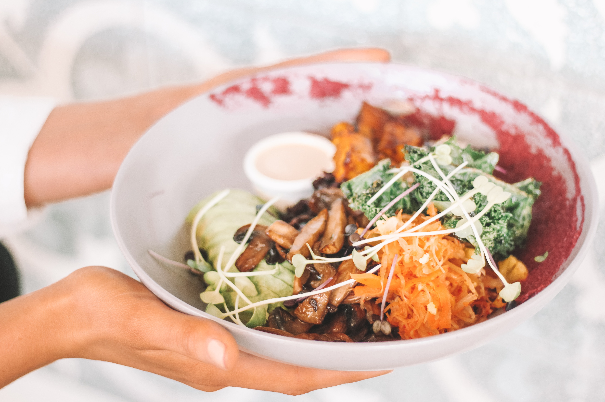
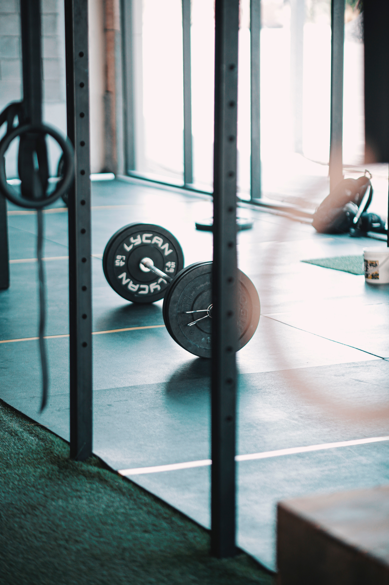
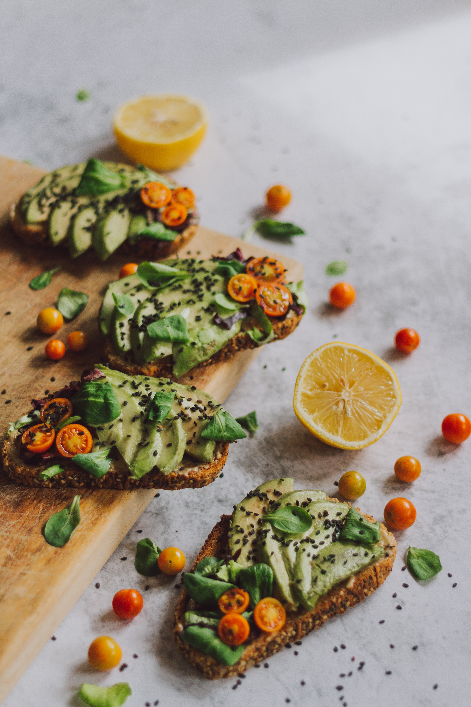
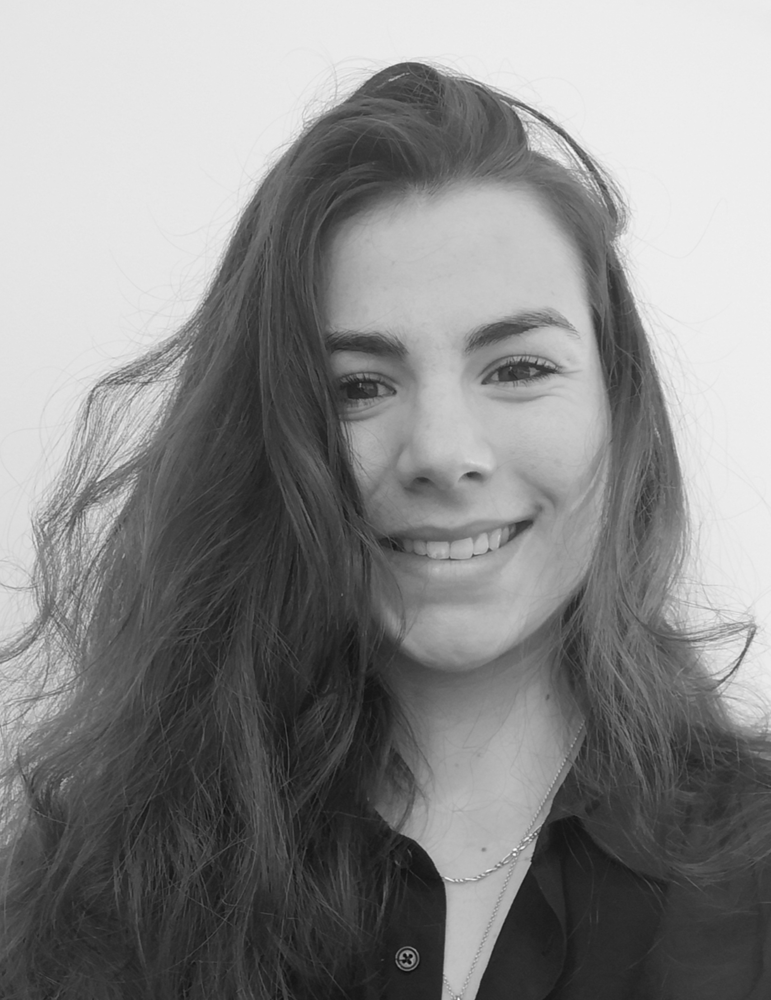

Un suivi diététique est avant tout
une alliance entre le patient et le diététicien(ne)
Les prestations
Le Poids


Le bien être
Les diverses pathologies


Le sport
Ateliers et interventions


Végétaliser son alimentation
Pour qui ?
Tout public
- Enfants
- Adolescents
- Adultes
- Femmes enceinte
- Femmes allaitantes
- Personnes âgées
- Sportifs (débutants, intermédiaires, confirmés, professionnels)
Comment ça se passe ?
Lors du premier entretien, je prends connaissance de votre problématique et symptômes associés, de vos habitudes alimentaires, ainsi que du contexte dans lequel vous évoluez. Ensuite nous établissons, ensemble, des objectifs et un plan de soin diététique, qui s’organise en consultations de 30 minutes, afin que je vous accompagne au plus juste, dans vos changements alimentaires.
L’éducation nutritionnelle est au centre des suivis diététiques que je propose, afin de vous donner les clés pour une alimentation, équilibrée et variée, qui vous correspond.
L’éducation nutritionnelle est au centre des suivis diététiques que je propose, afin de vous donner les clés pour une alimentation, équilibrée et variée, qui vous correspond.
Où ?
A domicile dans un rayon de 20km autour de Mouriès (13) et dans un rayon de 15km autour de Le Thor (84)
En visioconférence dans toute la france
Qui suis-je ?
Je suis diététicienne diplômée d’Etat et en nutrition des activités physiques et sportives [enregistrée au répertoire national des professionnels de santé, répertoire ADELI, auprès de l’ARS (Agence Régional de Santé) du Vaucluse (84)].
Je suis conventionnée avec une association : Cancer et Qualité de Vie à Domicile (CQVD), et avec le Centre Hospitalier d’Avignon dans la prise en charge en cancérologie.
Passionnée par la diététique clinique et métabolique, l’aspect relationnel et l’alliance thérapeutique ont une grande place dans ma pratique professionnelle, car font, selon moi, intégralement partis du soin diététique.
La nutrition ne concerne pas uniquement les calories, les protéines, le sucre, … etc. D’autres paramètres entrent dans la sphère de l’alimentation, tels que les émotions, l’enfance et les expériences passées. Ainsi, l’acte alimentaire devient un geste personnel, que nous ne devons pas modifier entièrement d’un seul coup, en appliquant des « régimes » et autres plans alimentaires non personnalisés et non adaptés à ce que vous êtes.
Ici vous serez pris en compte dans votre globalité, avec écoute active et dans une neutralité bienveillante.
Je suis conventionnée avec une association : Cancer et Qualité de Vie à Domicile (CQVD), et avec le Centre Hospitalier d’Avignon dans la prise en charge en cancérologie.
Passionnée par la diététique clinique et métabolique, l’aspect relationnel et l’alliance thérapeutique ont une grande place dans ma pratique professionnelle, car font, selon moi, intégralement partis du soin diététique.
La nutrition ne concerne pas uniquement les calories, les protéines, le sucre, … etc. D’autres paramètres entrent dans la sphère de l’alimentation, tels que les émotions, l’enfance et les expériences passées. Ainsi, l’acte alimentaire devient un geste personnel, que nous ne devons pas modifier entièrement d’un seul coup, en appliquant des « régimes » et autres plans alimentaires non personnalisés et non adaptés à ce que vous êtes.
Ici vous serez pris en compte dans votre globalité, avec écoute active et dans une neutralité bienveillante.
